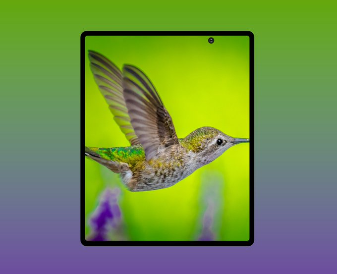
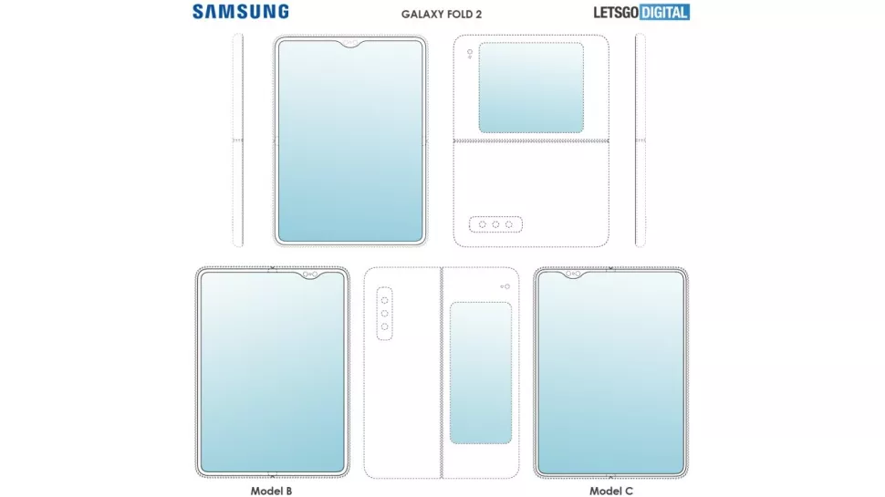

Handphone
Samsung Galaxy Fold 2 Release Date, Price, News, and Leaks
The Next Foldable Phone From Samsung?
It took a long time for the Samsung Galaxy Fold to hit store shelves, thanks to years of rumors followed by months of delays, but the resulting product felt undeniably first-gen. If you're here to find out about Samsung's next foldable phone, you should check out our hands on Samsung Galaxy Z Flip review, which is quite a different beast to the Fold 2. It was launched in February 2020 alongside the Samsung Galaxy S20 range. The Galaxy Z Flip has a different form factor to the Galaxy Fold (and likely the Fold 2) as it's a 'clamshell' device that folds like a flip phone of old or the Motorola Razr 2019, but with a long and flexible screen. While the Galaxy Z Flip might be a comparatively affordable foldable, the Samsung Galaxy Fold is for those who want the cutting-edge of smartphone technology no matter what it costs and how unpolished it is. But while we can’t recommend the Galaxy Fold to most, it is an exciting look at one possible future of phones, and the Samsung Galaxy Fold 2 is sure to fix some of the original's missteps. Below you’ll find everything we've heard about it, along with a list of all the main things we want from it, because as you may have gathered, there’s plenty of room for improvement.
Samsung Galaxy Fold 2 Release Date and Price
A variety of sources have claimed we'll be seeing the Galaxy Fold 2 in August this year. Two separate trusted leakers have also now said we'll be hearing about it on August 5 alongside the Galaxy Note 20. One of those sources says that the phone will then be available to buy on August 20, which would match what Samsung has been able to do in previous years. Having said that, other sources have now said that while it will likely be unveiled in August, it probably won't be available to buy until September. This may be all in flux considering the Covid-19 pandemic, but the current thinking is that August will be the unveiling at least. Some sources are claiming the price of the phone will be similar to the original. - that's $1,980 / £1,900 / AU$2,900. Another source meanwhile has said to expect a price of between $1,780 - $1,980, but most likely around $1,880 (roughly £1,510 / AU$2,900), which would make it around $100 cheaper than the original Galaxy Fold.
Samsung Galaxy Fold 2 Design and Display
While early Galaxy Fold 2 leaks all turned out to be of the Galaxy Z Flip, a number of newer leaks have also now emerged. The most recent and detailed of these is a leaked render showing the front of the Galaxy Fold 2 with the screen open. It has notable bezels around every edge, and a punch-hole camera in an off-center position that looks a little strange. However, when folded in half that position would actually be central to one of the screens. It also keeps the front camera hardware out of the way of the rear camera, which the same source suggests is in a rectangular block at the top right of the rear.
This design also gives the phone a rather Galaxy S20-like look, as well as being similar to Galaxy Note 20 leaks. It would make sense for Samsung to unify the design of its main flagship ranges, so this could well be accurate, but of course we'd take it with a pinch of salt. We’ve also seen for example the three possible designs below, one of which is a clamshell design (likely the Z Flip), while the other two are closer to the current model.
Another patent meanwhile talks about a folding phone that works with a stylus, which could bring a future Fold closer to Samsung’s Galaxy Note range. If the foldable phone was to launch alongside the Galaxy Note devices, that would make a lot of sense. Indeed, the claim of a stylus has now been made multiple times, although one source specifically says it won't have one. Since then another source has added to the no S Pen claims, saying that the screen won't be durable enough to use with a stylus. A further patent has also suggested Samsung may be increasing the size of the display on the front of the device too. If Samsung opted for this design, it'd be a long screen along the front of the device and it even suggests the phone would be potentially water and dust resistant likes the Samsung Galaxy S20. Shipping with a stylus would make sense in order to make the most of the big screen, and the above patent specifically describes a stylus that can even work on the curved part of the screen while the phone is partially folded. These rumors followed an earlier report that Samsung was working on two new foldable phones, one of which ended up being the Samsung Galaxy Z Flip. The other is said to have a vertical fold like the original handset, but one that folds outwards, so the main screen is on the outside and always visible – it’s just either big or small depending on whether the phone is folded or unfolded. This sounds similar to the Huawei Mate X.
Source: https://www.techradar.com/news/samsung-galaxy-fold-2